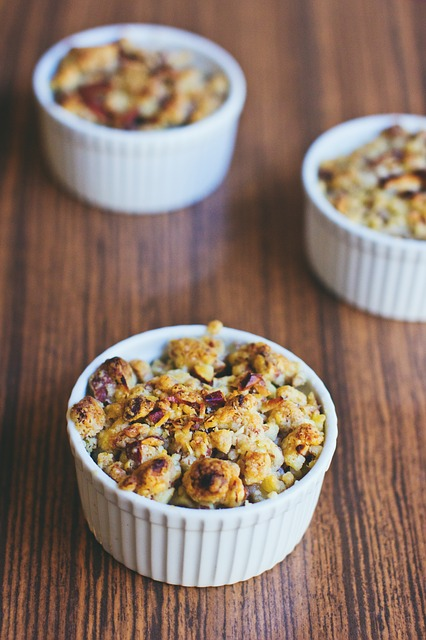

The Best Apple Crumble

Description
Apple crumble is the ultimate comfort and a versatile desert that works all of the time
Breakfast?, Apple Crumble, Lunch?. Apple Crumble, Dinner? Apple Crumble!.
Ingredients
Filling
- 575g Bramley Apple, about 3 medium apples, peeled cored and sliced to 1cm thick.
- 2tbsp Golden caster sugar
Crumble
- 175g Plain flour
- 110g Golden caster sugar
- 110g Cold butter
Topping
- 1tbsp Rolled oats
- 1tbsp Demerara sugar
- Custar or Vanilla ice cream to serve
Steps
- Heat the oven to 190C/170 fan/gas 5.
- Toss 575g peeled, cored and sliced Bramley
apples with 2 tbsp golden caster sugar and
put in a 23cm round baking dish at least
5cm deep, or a 20cm square dish.
Flatten down with your hand to
prevent too much crumble falling through.
- Put 175g plain flour and 110g golden caster
sugar in a bowl with a good pinch of salt.
- Slice in 110g cold butter and rub it in with your
fingertips until the mixture looks like moist breadcrumbs.
Shake the bowl and any big bits will come to the surface – rub them in.
Alternatively, pulse in a processor until sandy (don’t over-process).
- Pour the crumb mix over the apples to form a pile in the centre, then use a fork to even out.
- Gently press the surface with the back of the fork so the crumble holds together and goes crisp, then lightly drag the fork
over the top for a decorative finish.
- Sprinkle 1 tbsp rolled oats and 1 tbsp demerara sugar over evenly, if you wish.
- Set on a baking tray and put in the preheated
oven for 35-40 minutes, until the top is golden and
the apples feel very soft when you insert a small, sharp knife.
Leave to cool for 10 minutes before serving.